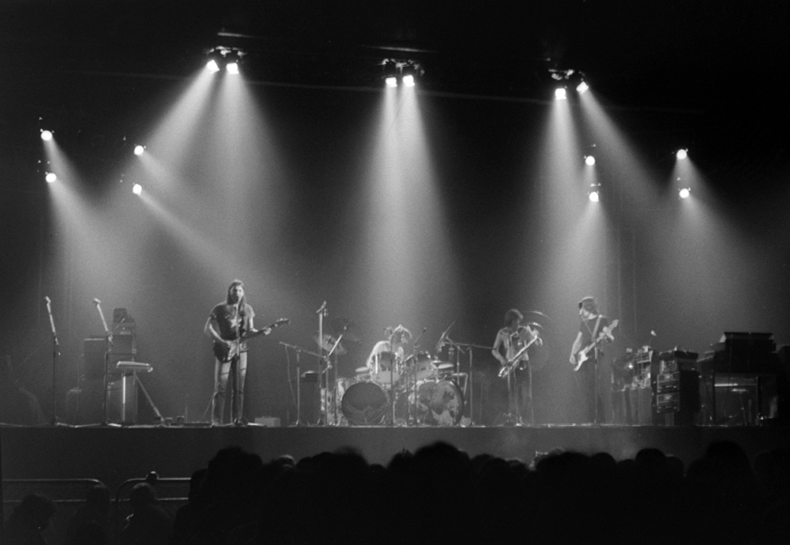

The Dark Side of the Moon
The Dark Side of the Moon (CD-ul lansat în 1993 s-a numit Dark Side of the Moon) este un album conceptual al formației Pink Floyd lansat pe 24 martie 1973. Toți cei patru membri ai formației: David Gilmour, Nick Mason, Roger Waters și Richard Wright au participat la scrierea și producerea albumului. Este, de asemenea, primul album Pink Floyd ale cărui versuri îi aparțin în întregime lui Roger Waters. Albumul ocupă poziția a cincea în ierarhia celor mai bine vândute albume în întreaga lume. A fost pe prima poziție în „TOP 200 Billboard”, menținându-se în top 200 mai mult de 700 de săptămâni, aproximativ 14 ani.

Pink Floyd, performând în concert la Earls Court în timpul turneului "The Darkside of the Moon"
Tracklist
- „Speak to Me” (Nick Mason)
- „Breathe” (Roger Waters, David Gilmour, Richard Wright)
- „On the Run” (David Gilmour, Roger Waters) (3:31)
- „Time / Breathe (reprise)” (Nick Mason, Roger Waters, David Gilmour, Richard Wright)
- „The Great Gig in the Sky” (Richard Wright)
- „Money” (Roger Waters)
- „Us and Them” (Roger Waters, Richard Wright)
- „Any Colour You Like” (David Gilmour, Nick Mason, Richard Wright)
- „Brain Damage” (Roger Waters)
- „Eclipse” (Roger Waters)